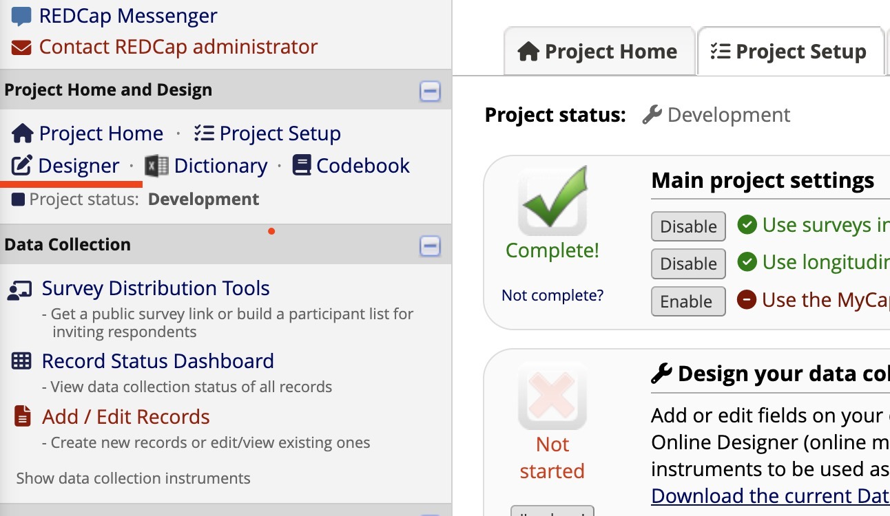

RareLink CDM Instruments
Warning
RareLink v2.0.2 is currently under development, and many things are subject to change. Please reach out before implementing or using the software to ensure you have the latest updates and guidance.
To install the RareLink CDM instruments, you will need to download the instruments from the RareLink REDCap project.
Tip
Read the RareLink-CDM section to learn more about the RareLink CDM Instruments.
Download the instruments from the RareLink REDCap project.
Via the RareLink CLI type:
rarelink redcap-setup download --help
Import the instruments into your REDCap project.
Go to your REDCap project.
Click on the “Designer” tab on the left side of the screen.
Click on the “Data Dictionary” tab on the top of the screen.
Select the RareLink CDM Data Dictionary CSV file, or the separate instrument csv files.
Click on the “Import” button.

{kind=link}

Tip
Read pages 25 & 26 of the Comprehensive Guide to REDCap for more information.
Verify that the instruments have been imported correctly.
Go to the “Online Designer” tab and check the data elements in each instrument.
- check with the RareLink-CDM page to verify that
the instruments have been imported correctly.
the instruments are consistent with the RareLink CDM Data Dictionary.
the fields with BioPortal are connected properly.
Tip
Read the REDCap section to learn more about the general REDCap Setup, among others how to connect BioPortal to REDCap.
Start capturing data with the RareLink CDM instruments.
Check out the Guide for Manual Data Capture section to learn more about manual data capture.
Continue here…
Guide to develop the Set up a REDCap Project
User guide for Guide for Manual Data Capture
Attention
To use your local REDCap project, you will need to set up a local REDCap instance. For this please contact your local REDCap administratior. A project name could for example be “RareLink - Your local REDCap location”.
This section provides a guide for developing REDCap instruments around the RareLink CDM that can also be processed by the Phenopacket and FHIR pipeline. If the rules are followd upon development of the REDCap sheets, another subsequent mapping step will be required to convert the data into the Phenopackets or FHIR format. For this second step guides are given below, too.
Note
This section is still to be implemented in the docuemntation.
Example CIEINR.
Rule Sets.